Un puits, une ombre d'obélisque et un peu de géométrie ont suffi, deux siècles avant notre ère, à mesurer la planète entière à 1 % près. Deux mille ans plus tard, deux hommes ont failli y laisser leur vie pour définir le mètre.
Comment on a su que la Terre était ronde bien avant d'en sortir — et comment un bibliothécaire grec en a mesuré la circonférence avec une ombre.
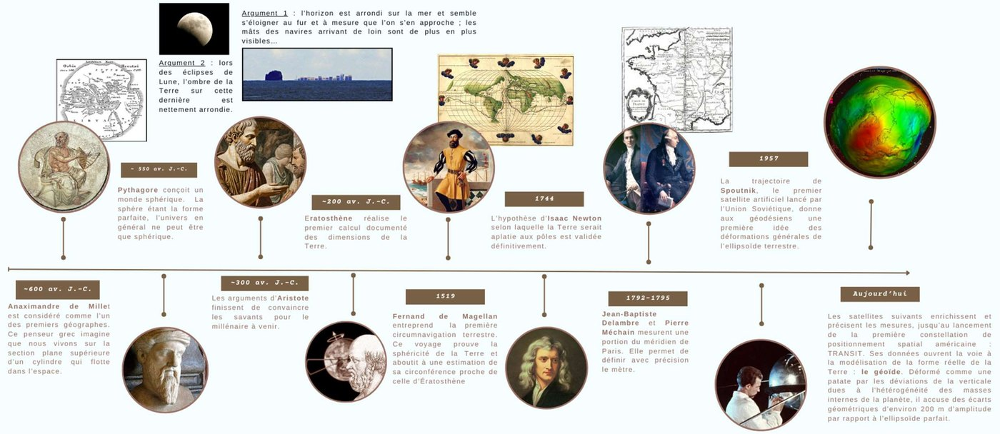
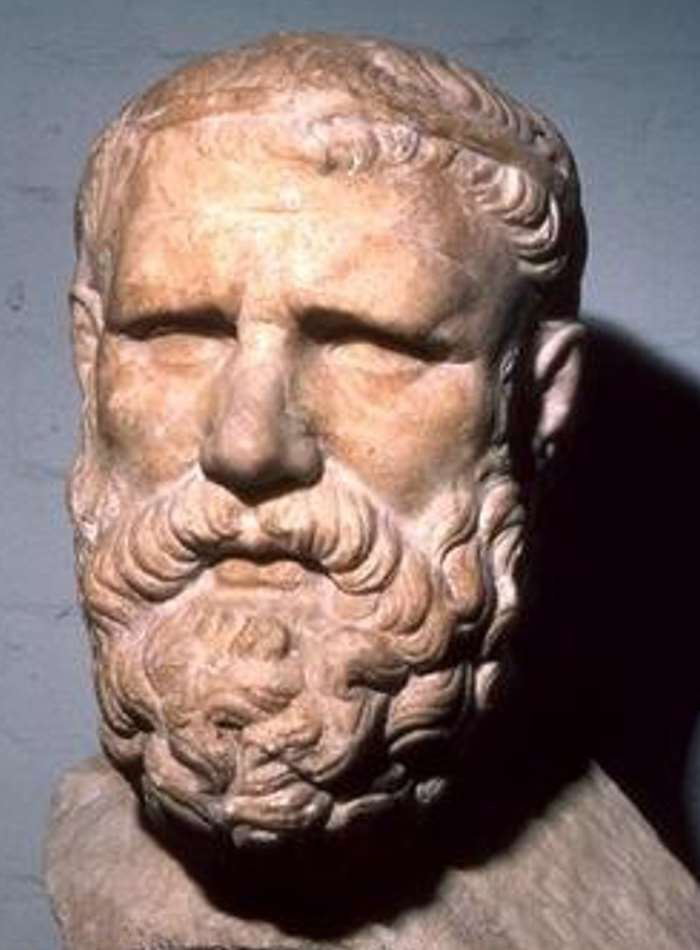
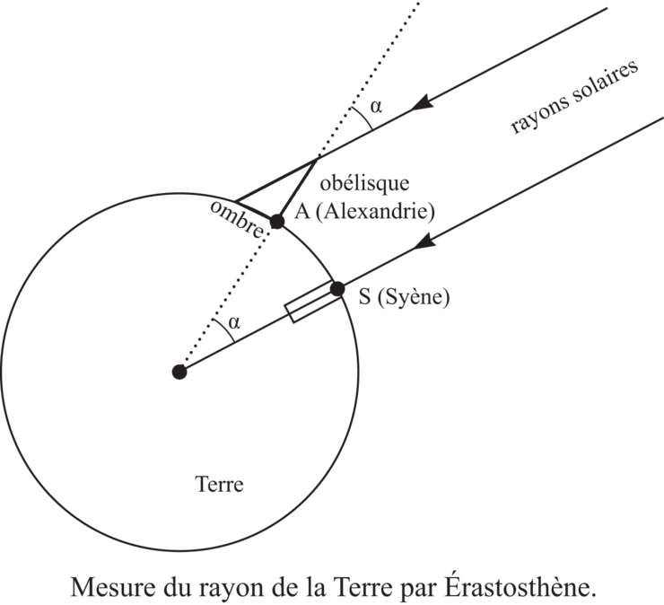
Ératosthène, conservateur de la bibliothèque d'Alexandrie, serait l'initiateur de la division du globe par un système de lignes méridiennes et latitudinales. C'est surtout à lui que l'on attribue le calcul d'une valeur correcte de la circonférence terrestre.
| Hypothèse | Ce qu'elle suppose |
|---|---|
| Même méridien | Il considère que Syène et Alexandrie (en Égypte) sont alignées sur le même méridien. |
| Rayons parallèles | Les rayons du Soleil sont supposés parallèles, en raison de l'éloignement de l'astre. Les droites qui coupent ces parallèles donnent des angles alternes-internes égaux. |
| Arcs proportionnels | Les arcs qui sous-tendent des angles égaux sont semblables. Ératosthène mesure donc l'angle de l'ombre du gnomon à Alexandrie à l'heure où, à Syène, le Soleil au zénith éclaire le fond d'un puits. |
Ératosthène estime la distance Alexandrie–Syène à 5 000 stades égyptiens.
Données : 1 stade = 160 m · α = 7,2°
| Arc de cercle (km) | 800 | ? |
|---|---|---|
| Angle (°) | 7,2 | 360 |
Que faire si aucun point de référence ne se trouve sur le tropique — c'est-à-dire si le Soleil n'est jamais à la verticale d'aucun des deux points ?
| Lieu | Observation, le 21 juin au midi solaire |
|---|---|
| Belgrade | les rayons du Soleil forment un angle α = 21,3° avec la verticale |
| Corfou, 580 km au sud | les rayons forment un angle β = 16,1° avec la verticale |
On rappelle que Corfou ne se situe pas en zone tropicale — et donc que les rayons y arrivant à ce moment sont inclinés vers le sud.
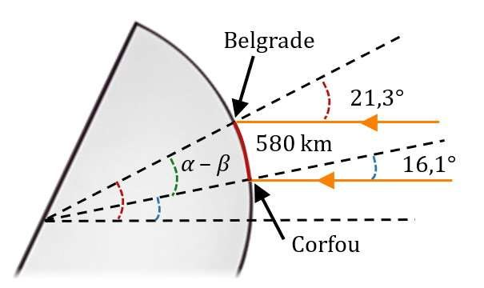
| Arc de cercle (km) | 580 | ? |
|---|---|---|
| Angle (°) | 5,2 | 360 |
Pourquoi la France a eu besoin de mesurer la Terre pour se donner une unité de longueur — et comment on mesure 1 000 km sans jamais parcourir la distance.
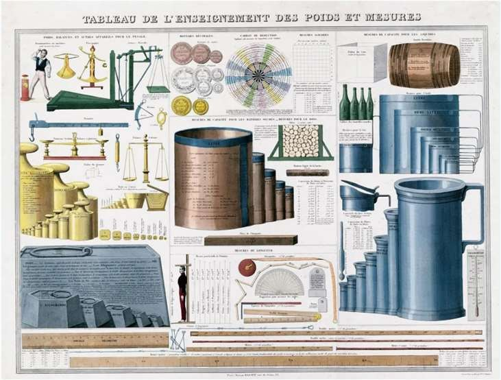
Le marquis de Condorcet (1743-1794), mathématicien et auteur, pense alors un système qui permettrait d'unifier et de rationaliser les poids et mesures. C'est la naissance du système métrique.
Mais pour définir le mètre ainsi, encore faut-il mesurer ce méridien. C'est l'aventure titanesque dans laquelle vont s'engager Jean-Baptiste Delambre et Pierre Méchain, entre 1792 et 1797. Ils vont avoir recours à la méthode de triangulation.
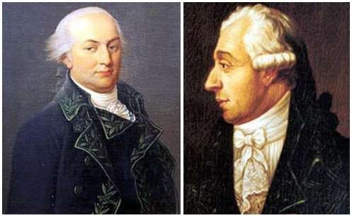
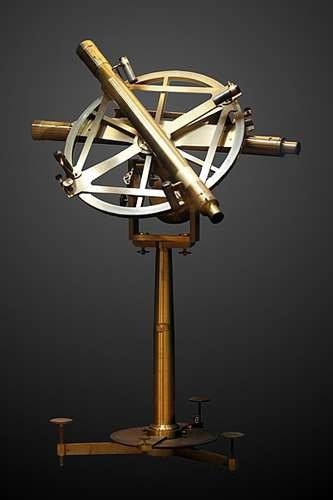
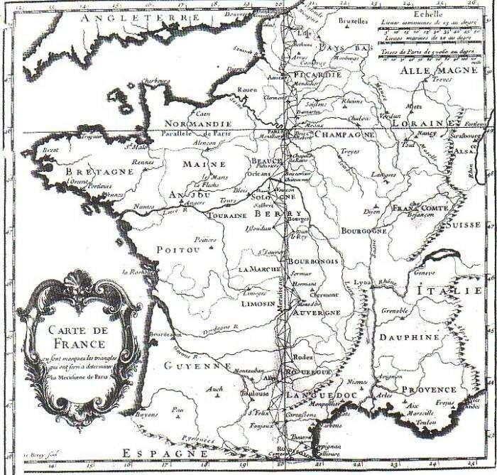
On souhaite mesurer une portion de méridien terrestre [AE]. On utilise pour cela 3 triangles dont on mesure certains angles, et on mesure la distance AC = 20,5 km.
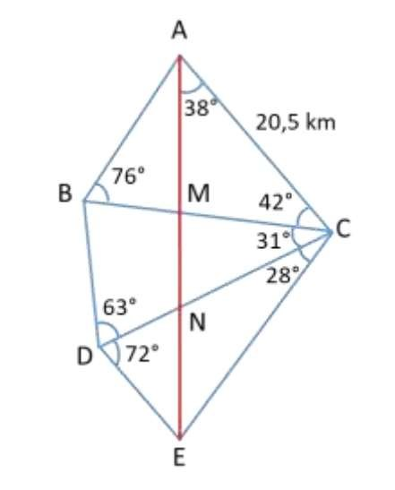
Latitude, longitude, et la question qui suit immédiatement : quelle distance sépare deux points d'une sphère ?
Pour se repérer sur la Terre, on la découpe « horizontalement » (du nord au sud) par des cercles parallèles à l'équateur, appelés parallèles. On la découpe aussi « verticalement » par des demi-cercles qui joignent le pôle Nord et le pôle Sud : les méridiens.
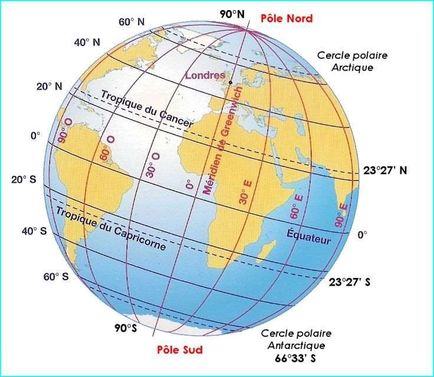
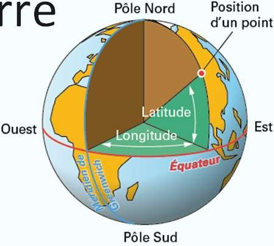
Exemple : Paris a pour latitude 48,8534° Nord et pour longitude 2,3488° Est.
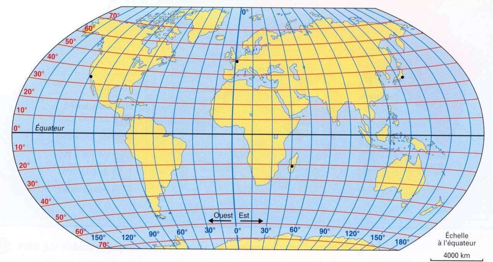
| Ville | Latitude | Longitude |
|---|---|---|
| Tokyo (Japon) | ||
| Ambalavao (Madagascar) | ||
| Amiens (France) | ||
| Los Angeles (USA) |
Deux points à arbitrer sur cet exercice :
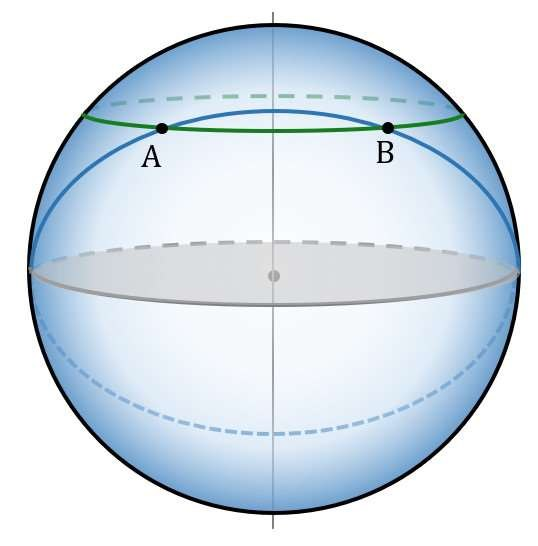
À la latitude θ, faire le tour de la Terre est plus court qu'au niveau de l'équateur : le rayon RL de ce cercle est plus petit que le rayon de la Terre RT. Un peu de géométrie de niveau collège permet de montrer que :
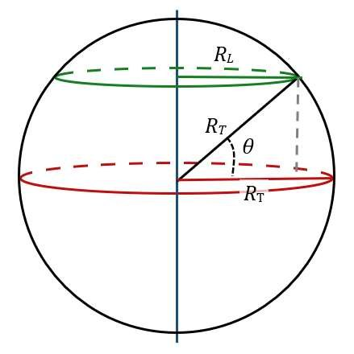
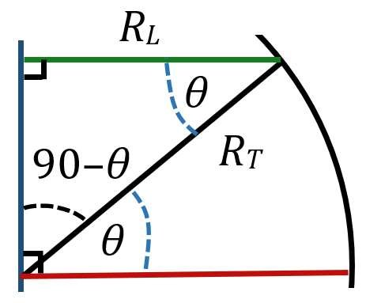
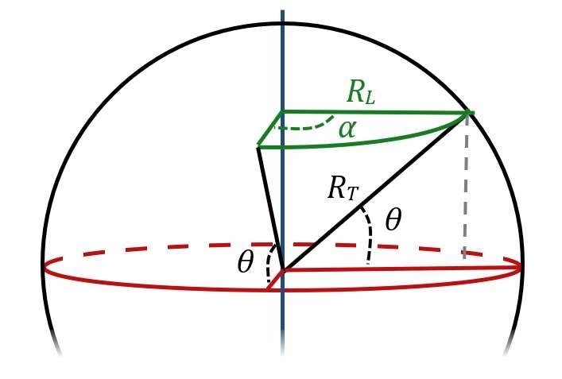
Coordonnées — Belgrade : 44,8° N ; 20,5° E · Bordeaux : 44,8° N ; 0,6° O
Un homme se tient au deuxième étage de la tour Eiffel. Quelle est la distance de sa ligne d'horizon ? Le calcul tient en un théorème de Pythagore.
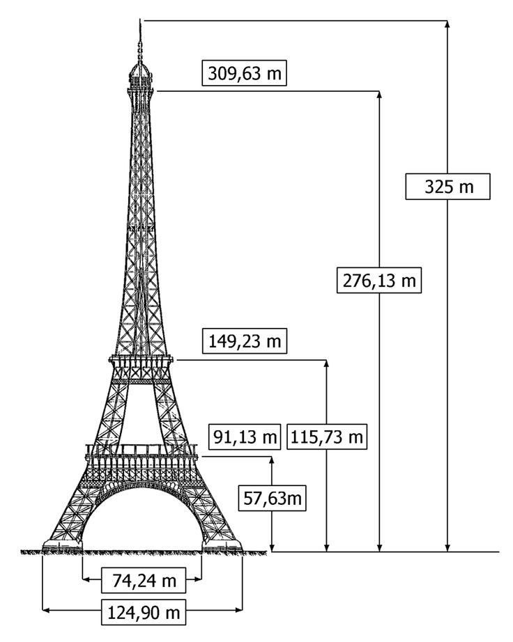
On pose : AO = RT + h (l'observateur), OB = RT (le rayon de la Terre), AB = Dh (la distance à l'horizon). Le triangle est rectangle en B, donc :
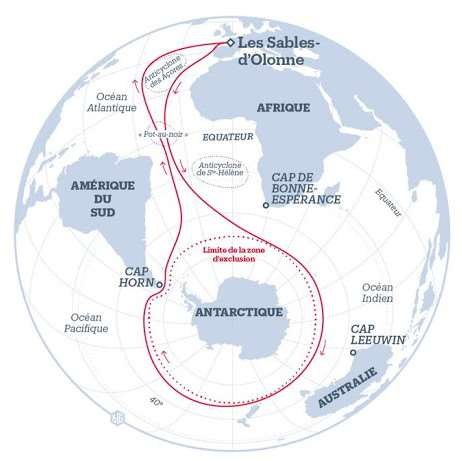